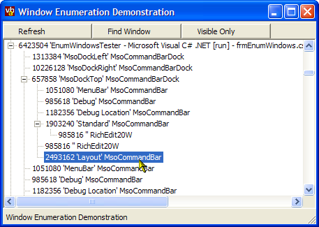

EnumWindows Code (37K)
EnumWindows Code (37K)
 4 Mar 2003
4 Mar 2003
First Posted

Enumerating Windows
Find all Windows and their details using the EnumWindows calls
This sample provides a class wrapper around the EnumWindows and EnumChildWindows API calls for use in .NET.
Enumerating Windows
The Platform SDK provides two methods to find details about which Windows are present on the system:
- The GetWindow API.
- The EnumWindows and EnumChildWindows APIs.
Whilst the GetWindow call provides more options for enumerating through the Window List (allowing you to find First, Next, Previous, Last, Parent and Child windows from any given Window), it can lead to problems if Windows are created or altered whilst the its being called. For example, you could get into an infinite loop or referencing a window that has been subsequently destroyed. The EnumWindows and EnumChildWindows APIs are much more reliable in this respect and have particular features to prevent issues associated with moving and repositioning, creating and destroying windows.
Using the EnumWindows calls
Both EnumWindows calls use a callback procedure to inform the caller of the Windows list. This callback procedure provides the window handle in question and allows the enumeration to be stopped before all windows have been enumerated.
Calling the functions is a matter of declaring the import to the call and setting up a Delegate for the procedure to call back to. This code is shown below.
#region EnumWindows
///
/// EnumWindows wrapper for .NET
///
public class EnumWindows
{
#region Delegates
private delegate int EnumWindowsProc(IntPtr hwnd, int lParam);
#endregion
#region UnManagedMethods
private class UnManagedMethods
{
[DllImport("user32")]
public extern static int EnumWindows (
EnumWindowsProc lpEnumFunc,
int lParam);
[DllImport("user32")]
public extern static int EnumChildWindows (
IntPtr hWndParent,
EnumWindowsProc lpEnumFunc,
int lParam);
}
#endregion
#region Member Variables
private EnumWindowsCollection items = null;
#endregion
///
/// Returns the collection of windows returned by
/// GetWindows
///
public EnumWindowsCollection Items
{
get
{
return this.items;
}
}
///
/// Gets all top level windows on the system.
///
public void GetWindows()
{
this.items = new EnumWindowsCollection();
UnManagedMethods.EnumWindows(
new EnumWindowsProc(this.WindowEnum),
0);
}
///
/// Gets all child windows of the specified window
///
/// Window Handle to get children for
public void GetWindows(
IntPtr hWndParent)
{
this.items = new EnumWindowsCollection();
UnManagedMethods.EnumChildWindows(
hWndParent,
new EnumWindowsProc(this.WindowEnum),
0);
}
#region EnumWindows callback
///
/// The enum Windows callback.
///
/// Window Handle
/// Application defined value
/// 1 to continue enumeration, 0 to stop
private int WindowEnum(
IntPtr hWnd,
int lParam)
{
if (this.OnWindowEnum(hWnd))
{
return 1;
}
else
{
return 0;
}
}
#endregion
///
/// Called whenever a new window is about to be added
/// by the Window enumeration called from GetWindows.
/// If overriding this function, return true to continue
/// enumeration or false to stop. If you do not call
/// the base implementation the Items collection will
/// be empty.
///
/// Window handle to add
/// True to continue enumeration, False to stop
protected virtual bool OnWindowEnum(
IntPtr hWnd)
{
items.Add(hWnd);
return true;
}
#region Constructor, Dispose
public EnumWindows()
{
// nothing to do
}
#endregion
}
#endregion EnumWindows
The download code also includes the implementation of the EnumWindowsCollection and EnumWindowsItem classes. The collection class provides a type-safe ArrayList-based collection of Windows that have been added, and the EnumWindowsItem provides a number of helper methods to allow you to get the Window's title, class name, styles, Window Position and whether the window is visible, minimised or maximised.
Using the Classes
There are two ways to use the code as provided. You can either use it as is and interrogate the EnumWindowsCollection or you can extend the EnumWindows class and provide a custom OnWindowEnum override. The latter method is great if you just want to find a window and don't need the overhead of storing all the Window handles. Since the EnumWindowsItem object is public and has public constructor, you can also use this to simplify getting the window title or class name.
The sample application provided in the demonstration shows how to perform both methods. The first method is used to populate the TreeView of windows in the sample, whilst the second method is used to find a window on the system by handle, class name or title.